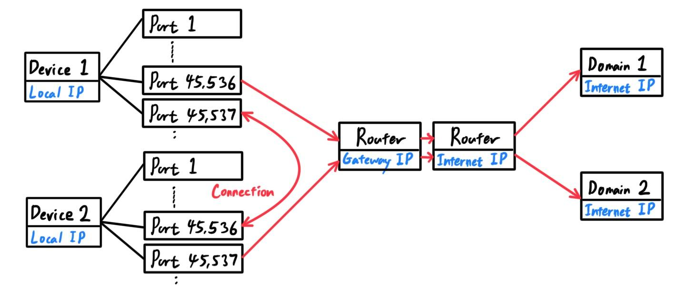

Computer Systems & Basics
System Hardware
[Hide]C:\Users\bahng>
| Windows CMD | MacOS Terminal | Task |
|---|---|---|
| wmic LOGICALDISK LIST BRIEF | Lists all the drives on your computer. Note that the DeviceID is simply the drive letter, the DriveType has numerical encodings (2: Removable disk, 3: Fixed local disk, 4: Network disk), the FreeSpace and Size are in bytes, and the VolumeName is the name of the disk. | |
| wmic diskdrive get status, model | Outputs the model name of the drive along with its status. If the status is OK the health is good, and if it shows 'Pred Fail' your drive may crash soon. | |
| chkdsk c: | Checks the file system and provides a summary of issues on the drive. If the bad disk sectors is not 0, get technical assistance. | |
| dfrgui | Opens a window that tell you all types of drives on your computer. | |
| <letter>: (d:) | Changes the drive you are working in |
C:\Users\bahng>wmic LOGICALDISK LIST BRIEF DeviceID DriveType FreeSpace ProviderName Size VolumeName C: 3 838628864000 1003327844352 OS G: 3 71506178048 107374182400 Google Drive C:\Users\bahng>wmic diskdrive get status, model Model Status PM9A1 NVMe Samsung 1024GB OK
| Windows CMD | MacOS Terminal | Task |
|---|---|---|
| wmic MEMORYCHIP (get BankLabel, DeviceLocator, MemoryType, TypeDetail, Capacity, Speed) | Outputs relevant information about the RAM | |
| wmic memoryship list full | Outputs a list of all specifications of each memory stick. | |
| systeminfo | findstr /C:"Total Physical Memory" | Outputs the total RAM memory of your computer. | |
| systeminfo |find "Available Physical Memory" | Outputs the available RAM memory of your computer. |
C:\Users\bahng>wmic MEMORYCHIP get BankLabel, DeviceLocator, MemoryType, TypeDetail, Capacity, Speed
BankLabel Capacity DeviceLocator MemoryType Speed TypeDetail
8589934592 DIMM A 0 3200 128
8589934592 DIMM B 0 3200 128
The status of your CPU can be checked with the following commands
| Windows CMD | MacOS Terminal | Task |
|---|---|---|
| wmic cpu list full | Outputs a list of all specifications of the CPU | |
| wmic cpu (get caption, deviceid, name, numberofcores, maxclockspeed, status) | Outputs relevant information about the CPU |
Program Lifecycle Phases
[Hide]| Compiler | Interpreter |
|---|---|
| Takes more time to analyze source code but execution time is faster. | Takes less time to analyze source code but execution time is slower. |
| Debugging is harder since compiler generates error message after entire scan. | Debugging is easier since interpreter continues translating the program until error is met. |
| Requires a lot of memory for generating object codes. | Requires less memory because no object code is generated |
| Generates intermediate object code. | No intermediate object code is generated. |
.exe or .bat, and they can generally be run (invoked) in two ways:
C:\Users\bahng\AppData\Local\Programs\Python\Python39C:\windows\py.exe| Windows CMD | MacOS Terminal | Task |
|---|---|---|
| python (py) -V | Checks the version of python.exe (py.exe) | |
| python.exe (py.exe) <script>.py | Runs a python script with the executable (assuming python and py are in PATH) |
Navigation Shell Commands
[Hide]I work in both the Mac and Windows operating systems, which requires me to know two sets of commands when accessing the command line.
| Windows CMD | MacOS Terminal | Task |
|---|---|---|
| dir | ls | Lists files and folders in current directory |
| dir /ad | ls -a | Lists ALL files and folders in current directory |
| cd | pwd | Full path of current folder/directory |
| cd < path to directory > | cd < path to directory > | Change folder/directory |
| cd .. | cd .. | One directory up in directory tree |
| cd \ | cd / | Move to root directory |
| mkdir (rmdir) newFolder | mkdir (rmdir) newFolder | Create (delete) new directory in current directory |
| echo < text > > filename(.txt) | cat > fileName(.txt) | Create new file with <text> written inside. If file type is not specified, default is .txt. |
| cls | clear | Clear the terminal screen |
| type | cat | Concatenate and print a file |
| ren oldName newName | mv oldName newName | Rename a file or directory |
| robocopy (move) FileOrFolderPath <path to destination directory> | cp -r (mv) myFolder <path to destination> | Copy (move) a directory to destination directory |
| wmic LOGICALDISK LIST BRIEF | Lists all the drives on your computer | |
| <letter>: (d:) | Changes the drive you are working in | |
| nano fileName | Open file in nano, which would encode the binary data differently. This is especially fun since you can open non-text files and output them in a different encoding, even if the encoding is complete nonsense. Deleting a few lines in a, say mp3 file opened in nano can corrput the file, leading to distortions in the original mp3 audio. |
Network & Connectivity Commands
[Hide]172.30. or 192.168.). Packets of data leaves your comptuer address, from a port (out of the 216=65,536 ports), to the router local IP address, known as the default gateway. This router then connects to the internet, which now has another address (which can be Googled) and forwards the packets through there.
 | Windows CMD | MacOS Terminal | Task |
|---|---|---|
| ping (-t) www.google.com | ping www.google.com | Checks the ping time to www.google.com by sending small multiple-byte packets of data. Measures in milliseconds. The "-t" pings the address forever until manually stopped. |
| ping 192.168.0.1 | ping 192.168.0.1 | Checks the ping time to an IP address in your local network by sending small multiple-byte packets of data. Make sure that they are both on the same network, with the same subnet mask, and firewalls are turned off. |
| ipconfig (/all) | Shows your IP address and related information about your device within the network. | |
| ipconfig /displaydns | Displays the DNS cache of your system | |
| ipconfig /flushdns | Flushes the DNS cache of your system. | |
| tracert www.google.com | Traces the route it takes for a packet to reach a destination and shows information about each hop along that route. If you’re having issues connecting to a website, tracert can show you where the problem is occurring. | |
| netstat -an | nettop | Displays a list of all open network connections on the computer, along with the port they're using and the foreign IP address they're connected to. |
| nslookup www.google.com | nslookup www.google.com | Find the IP address associated with a domain |
| ipconfig /release | Forces your network adapter (internal computer hardware that connects to network) to drop its assigned IP address. Note that this disconnects your wifi. | |
| ipconfig /renew | Renews the network adapter's IP address | |
| arp -a | arp -a | Shows all the devices connected to your network. |
Environment Variables
[Hide]| Windows CMD | MacOS Terminal | Task |
|---|---|---|
| set | Lists all the environment variables | |
| echo %<VARIABLE>% | Returns the value of the environment variable |
C:\Users\bahng>set ALLUSERSPROFILE=C:\ProgramData APPDATA=C:\Users\bahng\AppData\Roaming CommonProgramFiles=C:\Program Files\Common Files CommonProgramFiles(x86)=C:\Program Files (x86)\Common Files CommonProgramW6432=C:\Program Files\Common FilesThey are all in the form
NAME=VALUEwhere the NAMEs are conventionally written in uppercase (
&VARIABLE for MacOS and %VARIABLE% for Windows), and the VALUEs are strings. The point of these variables is to communicated to programs how the machine is set up and sometimes to control the behavior of programs (e.g. where the home directory is, what user is logged in, etc.).
One notable environment variable is the PATH environment variable, which is basically a set of directories where executable programs are located. More specifically, it specifies the directories in which executable programs are located on the machine that can be started without knowing and typing the whole path to the file on the command line. Note that the shell does not check subdirectories in PATH, only that directory itself. We can also modify which file extensions (other than the common .exe, .bat, etc.) is supported by editing %PATHEXT%. One can check this this set of directories with the following commands:
| Windows CMD | MacOS Terminal | Task |
|---|---|---|
| echo %PATH% | echo $PATH | Specifies the directories in which executables are located on the machine |
| echo %PATHEXT% | echo $PATHEXT | Specifies the extensions that are supported by PATH and can therefore be called directly in cmd/terminal. |
For example, calling echo %PATHEXT% on my Windows laptop returns the following supported executable extensions:
C:\Users\bahng>echo %PATHEXT% .COM;.EXE;.BAT;.CMD;.VBS;.VBE;.JS;.JSE;.WSF;.WSH;.MSC
On MacOS, PATH usually holds all bin and sbin directories relevant for the current user. On Windows, it contains at least the C:\Windows and C:\Windows\system32 directories. This is why you can run calc.exe or notepad.exe from the command line (you actually don't need to include the .exe, just calc will do), but not chrome.exe since it is located in C:\Program Files\Google\Chrome\Application.
Calling the PATH environment variable on my computer returns
C:\Users\bahng>echo %PATH% C:\Windows\system32;C:\Windows;C:\Windows\System32\Wbem;C:\Windows\System32\WindowsPowerShell\v1.0\;C:\Windows\System32\OpenSSH\;C:\Program Files (x86)\NVIDIA Corporation\PhysX\Common;C:\Program Files\NVIDIA Corporation\NVIDIA NvDLISR;C:\Users\bahng\anaconda3;C:\Users\bahng\anaconda3\Library\mingw-w64\bin;C:\Users\bahng\anaconda3\Library\usr\bin;C:\Users\bahng\anaconda3\Library\bin;C:\Users\bahng\anaconda3\Scripts;C:\Users\bahng\AppData\Local\Microsoft\WindowsApps;C:\Users\bahng\AppData\Local\Programs\Microsoft VS Code\bin;C:\Users\bahng\AppData\Local\Programs\Python\Python39;C:\Users\bahng\AppData\Local\Programs\Python\Python39\Scriptsand since I have
py.exe installed in C:\Windows\system32 (which is in PATH), I can call it immediately in cmd. However, the python.exe is located in C:\Users\bahng\AppData\Local\Programs\Python\Python39, which is currently not on the PATH variable and therefore cannot be called without specifying the entire path of python.exe. For convenience, we should modify the PATH variable to include the directory that python.exe is located in. Adding a directory to your PATH expands the # of directories that are searched when, from any directory, you enter a command in the shell. Unfortunately, modifying the PATH with the shell can be very dangerous, but there is an easy way to do it using a GUI explained very well through this link. All environment variables can be changed as explained in the link using the GUI (in the control panel).
Virtual Environments
[Hide]Lib\site-packages directory that contains all the packages needed for the project.
.py, in which there may be functions, classes, or variables defined. C:\Users\bahng\AppData\Local\Programs\Python\Python39.
Note that the Python directory contains the scripts, while the Python39 directory is technically known as the environment. venv folder has the path: C:\Users\bahng\PycharmProjects\HW_Problem_Generator\venv. | Windows CMD | MacOS Terminal | Task |
|---|---|---|
| python -m venv <path_to_venv_directory/NAME> | Creates a new virtual environment directory named NAME in current directory by default or in path_to_venv_directory specified. | |
| activate.bat | Activates the virtual environment. Remember to be in the scripts directory in order to run the executable. | |
| deactivate.bat | Deactivates the virtual environment. Remember to be in the scripts directory in order to run the executable. |
C:\User\bahng>python -m venv testvenv
C:\User\bahng>cd testvenv\Scripts
C:\Users\bahng\testvenv\Scripts>activate.bat
(venv) C:\Users\bahng\venv\Scripts> _
Remember that virtual environments are just directories that contain a library of site-packages and a collection of executables. They can be installed anywhere on your computer, even in directories that have nothing to do with Python scripts. C:\Users\bahng>conda env list # conda environments: # base C:\Users\bahng\anaconda3 testenv * C:\Users\bahng\anaconda3\envs\testenvThe asterick just means that I am currently in (i.e. have activated) the testenv environment.
| Windows CMD | MacOS Terminal | Task |
|---|---|---|
| conda info | Outputs information on conda | |
| conda -V | Outputs version of conda | |
| conda update conda | Updates conda | |
| conda install (update) PACKAGE | Install (update) PACKAGE with conda | |
| conda create --name NAME | Create a virtual environment called NAME. Note that regardless of which directory you are in, conda will create all virtual environments in anaconda3\envs. | |
| conda activate (deactivate) ENV | Activate (deactivate) the environment named ENV | |
| conda env list | Get a list of all conda environments, active environment shown with asterick. | |
| conda create --clone ENV --name ENV2 | Clones an environment | |
| conda list | List all packages & versions installed in active environment | |
| conda env remove --name ENV | Delete an environment and everyhing in it | |
| conda install --name ENV2 PKG | Install new package PKG in a different environment ENV2 | |
| conda remove --name ENV PKG1 PKG2 | Remove one or more packages from environment ENV | |
| Windows CMD | MacOS Terminal | Task |
|---|---|---|
| pip install (uninstall) PKG | Install (uninstall) a package directly from PyPI into the current active environment using pip. However, this may not install all the dependencies of the package, so the command below is recommended. | |
| python -m pip install (uninstall) PKG | Installs a package and all of its dependencies. The uninstall command does not uninstall the dependencies however. | |
| python -m pip install PKG --upgrade | Upgrades package to its latest version | |
| python -m pip install --upgrade pip | Update pip to its latest version | |
| python -m pip list | List all packages & versions installed in active environment | |
| pip show PKG | Shows information about package PKG | |
| python -m pip search PKG | Searches for the PKG package. | |
| pip --help | Returns the full list of pip options. |
DateTime
[Hide]datetime package, we can see that every datetime object has 7 components: year, month, day, hour, minute, second, microsecond.
dt.datetime.now() returns the current datetime. >>> import datetime as dt >>> x = dt.datetime.now() >>> x datetime.datetime(2021, 11, 29, 23, 9, 41, 334025) >>> print(x) 2021-11-29 23:09:41.334025 >>> type(x) <class 'datetime.datetime'>To create datetime objects, we use
dt.datetime(year, month, day). This can take in additional arguments for time (hour, minute, second, microsecond with default being 0).
>>> x = dt.datetime(2021, 11, 29) >>> print(x) 2021-11-29 00:00:00 >>> y = dt.datetime(2021, 11, 29, 23, 16, 43, 23454) >>> print(y) 2021-11-29 23:16:43.023454Given that we have a datetime, such as
y, we can do multiple things:
y.weekday() outputs a number representing the weekday (0: Mon, 1: Tues, 2: Wed, 3: Thurs, 4: Fri, 5: Sat, 6 Sun)y.date() outputs only the datey.time() outputs only the time>>> y.weekday() 0 >>> print(y.date()) 2021-11-29 >>> print(y.time()) 23:16:43.023454Furthermore, we can use
dt.timedelta to add or subtract a certain time from a datetime object.
dt.timedelta() creates a timedelta object that we can add to a datetime object. datetime object from another datetime object returns a timedelta object. >>> tday = dt.date.today() >>> tdelta = dt.timedelta(days=7) >>> print(tday) 2021-11-29 >>> nxtwk = tday + tdelta >>> print(nxtwk) 2021-12-06 >>> print(nxtwk - tday) 7 days, 0:00:00
datetime object x, x.strftime(format) converts it to a string.
>>> y = dt.datetime(2021, 11, 29, 23, 16, 43, 23454)
>>> print(y.strftime("%B"))
November
>>> print(y.strftime("%Y-%m-%d"))
2021-11-29
>>> print(y.strftime("%B %d, %Y on a %A at %I:%M%p"))
November 29, 2021 on a Monday at 11:16PM
The full list of legal format codes is listed:
| Directive | Description | Example |
|---|---|---|
| %a, %A, %w | Weekday short version, long version, as a number (0~6) | Wed, Wednesday, 3 |
| %d | Day of month 01-31 | 31 |
| %b, %B, %m | Month name short version, long version, as a number 01-12 | Dec, December, 12 |
| %y, %Y | Year short version, full version | 18, 2018 |
| %H, %I, %p, %M | Hour 00-23, Hour 00-12, AM/PM | 17, 05, PM |
| %M, %S, %f | Minute 00-59, Second 00-59, Microsecond 000000-999999 | 41, 08, 548513 |
| %j, %U, %W | Day number of year 001-366, Week number of year (Sunday as first day) 00-53, (Monday as first day) 00-53. | 365, 52, 52 |
pytz package is used when working with time zones. The list of all timezones can be found with the command pytz.all_timezones, but some important ones are:
pytz.timezone('Asia/Shanghai')pytz.timezone('US/Eastern')pytz.timezone('US/Pacific')pytz.timezone('US/Central')pytz.timezone('UTC')pytz.timezone('Asia/Seoul')pytz.timezone('Asia/Tokyo')
>>> x = dt.datetime(2021, 11, 29, tzinfo=pytz.timezone('US/Eastern'))
>>> x
datetime.datetime(2021, 11, 29, 0, 0, tzinfo=<DstTzInfo 'US/Eastern' LMT-1 day, 19:04:00 STD>)
>>> print(x)
2021-11-29 00:00:00-04:56
Numpy
[Hide]numpy and pandas are two packages used to analyze large datasets. We briefly go over some of them in this chapter. We assume that these packages are installed in the relevant venv (click here for more info on virtual environments). A quick comparison of numpy vs pandas.
| Pandas | Numpy |
|---|---|
| Preferred when working with Tabular data. | Preferred when working with Numerical data. |
| The powerful tools of pandas are Dataframes and Series. | The powerful tool of numpy is Arrays. |
| Pandas consume more memory. | Numpy is more memory efficient. |
| Pandas has better performance when number of rows is 500k or more. | Numpy has better performance when number of rows is 50k or less. |
| Indexing of pandas series is very slow compared to numpy arrays. | Indexing of numpy Arrays is very fast. |
| Pandas offers 2D table object called DataFrame. | Numpy is capable of providing multi-dimensional arrays. |
ndarray will create a new array and delete the original. a and b, we could iterate over each element:
c = []
for i in range(len(a)):
c.append(a[i] * b[i])
This produces the correct answer, but if a and b each contain millions of numbers, we will pay the price for the inefficienies of looping in Python. We could accomplish the same task much more quickly in C by writing:
for (i = 0; i < rows; i++): {
c[i] = a[i] * b[i];
}
This saves all the overhead involved in interpreting the Python code and manipulating Python objects, but at the expense of the benefits gained from coding in Python. Furtherore, the coding work required increases with the dimensionality of our data. In the case of a 2-D array, the C code expands to
for (i = 0; i < rows; i++): {
for (j = 0; j < columns; j++): {
c[i][j] = a[i][j] * b[i][j];
}
}
Numpy gives the best of both worlds: operations speedily executed by pre-compiled C code but with the code simplicity of something based on Python. This is known as vectorization, meaning the absence of any explicit looping, indexing, etc. in the code (or more accurately, the looping, etc. are taking place "behind the scenes" in optimized pre-compiled C code).
ndarray, is a multidimentional container of items of the same type and size. It is constructed using array and has the following attributes:
ndarray.ndim outputs the dimension of the arrayndarray.shape returns the tuple describing the shapendarray.size returns the total number of elements in the arrayndarray.dtype describes the type of the elements in the arrayndarray.itemsize returns the amount of memory each element takes up, in Bytes
>>> x = np.array([[0, 1, 2, 3, 4], [5, 6, 7, 8, 9], [10, 11, 12, 13, 14]])
>>> x
array([[ 0, 1, 2, 3, 4],
[ 5, 6, 7, 8, 9],
[10, 11, 12, 13, 14]])
>>> type(x)
<class 'numpy.ndarray'>
>>> x.ndim
2
>>> x.shape
(3, 5)
>>> x.size
15
>>> x.dtype
dtype('int32')
>>> x.itemsize
4
Numpy also supports arrays of complex numbers.
>>> np.array([[1+5j, 2+3j], [-8j, 4]], dtype=complex)
array([[ 1.+5.j, 2.+3.j],
[-0.-8.j, 4.+0.j]])
Furthermore, a 3-D array is shown as a stack of 2-D arrays.
>>> np.arange(60).reshape(3, 4, 5)
array([[[ 0, 1, 2, 3, 4],
[ 5, 6, 7, 8, 9],
[10, 11, 12, 13, 14],
[15, 16, 17, 18, 19]],
[[20, 21, 22, 23, 24],
[25, 26, 27, 28, 29],
[30, 31, 32, 33, 34],
[35, 36, 37, 38, 39]],
[[40, 41, 42, 43, 44],
[45, 46, 47, 48, 49],
[50, 51, 52, 53, 54],
[55, 56, 57, 58, 59]]])
np.array creates the array from an iterated listnp.arange creates a 1-D array with elements indexed from 0ndarray.reshape reshapes the array to a specified shapenp.zeros creates an array of 0snp.ones creates an array of 1snp.empty creates an array of uninitialized valuesnp.full creates an array filled with one specified value
>>> np.array([[2, 3, 5], [-1, 8, 9]])
array([[ 2, 3, 5],
[-1, 8, 9]])
>>> np.arange(8)
array([0, 1, 2, 3, 4, 5, 6, 7])
>>> np.arange(8).reshape(2, 4)
array([[0, 1, 2, 3],
[4, 5, 6, 7]])
>>> np.zeros((2, 3), dtype=np.int64)
array([[0, 0, 0],
[0, 0, 0]], dtype=int64)
>>> np.ones(4)
array([1., 1., 1., 1.])
>>> np.empty((2, 3, 2))
array([[[4.45057637e-308, 1.78021527e-306],
[8.45549797e-307, 1.37962049e-306],
[1.11260619e-306, 1.78010255e-306]],
[[9.79054228e-307, 4.45057637e-308],
[8.45596650e-307, 9.34602321e-307],
[4.94065646e-322, 1.24610927e-306]]])
>>> np.full((2, 3), 10, dtype=np.int32)
array([[10, 10, 10],
[10, 10, 10]])
Furthermore, the np.arange function can be used to make arrays containing general arithmetic sequences, and if the number of elements is known (but not the step size), we can use np.linspace
>>> from numpy import pi
>>> np.arange(10, 30, 5)
array([10, 15, 20, 25])
>>> np.arange(0, 2, 0.3)
array([0. , 0.3, 0.6, 0.9, 1.2, 1.5, 1.8])
>>> np.linspace(0, 2, 9)
array([0. , 0.25, 0.5 , 0.75, 1. , 1.25, 1.5 , 1.75, 2. ])
>>> np.linspace(0, 2 * pi, 10)
array([0. , 0.6981317 , 1.3962634 , 2.0943951 , 2.7925268 ,
3.4906585 , 4.1887902 , 4.88692191, 5.58505361, 6.28318531])
To get an array of random numbers, we use the following functions
np.random.rand(d1, d2, ...) returns an array with elements picked randomly from a uniform distribution over $[0, 1)$, with the shape as its parameter. np.random.randint (low, high, shape) returns an array of shape with elements as integers chosen randomly between low and high.
>>> np.random.rand()
0.9137870621759168
>>> np.random.rand(3, 2)
array([[0.40222644, 0.63487523],
[0.03923849, 0.17318991],
[0.25070361, 0.42871893]])
>>> np.random.randint(3, 10, (3, 3))
array([[3, 7, 3],
[5, 3, 8],
[6, 3, 8]])
Finally, the null value is created with np.nan, which outputs NaN. This can be thought of as an undefined or missing value.
>>> np.nan nan
ndarray is like indexing the elements of a matrix: row first, then column (according to the shape)
>>> x = np.arange(12).reshape(3, 4)
>>> x
array([[ 0, 1, 2, 3],
[ 4, 5, 6, 7],
[ 8, 9, 10, 11]])
>>> x[2,3]
11
>>> x[0]
array([0, 1, 2, 3])
>>> x[:, 0]
array([0, 4, 8])
>>> x[-1]
array([ 8, 9, 10, 11])
Arrays can be stacked and split along different axes.
np.vstack((a, b)) stacks array b below a vertically. np.hstack((a, b)) stacks array b to the right of a horizontally. hsplit splits an array along its horizontal axis, either by specifying the number of equally shaped arrays to return or by specifying the columns after which the division should occur. vsplit does exactly the same, except along its vertical axis.
>>> x = np.arange(4).reshape(2, 2)
>>> y =np.arange(5, 9).reshape(2, 2)
>>> x
array([[0, 1],
[2, 3]])
>>> y
array([[5, 6],
[7, 8]])
>>> np.vstack((x, y))
array([[0, 1],
[2, 3],
[5, 6],
[7, 8]])
>>> np.hstack((x, y))
array([[0, 1, 5, 6],
[2, 3, 7, 8]])
>>> z = np.arange(20).reshape(2, 10)
>>> z
array([[ 0, 1, 2, 3, 4, 5, 6, 7, 8, 9],
[10, 11, 12, 13, 14, 15, 16, 17, 18, 19]])
>>> np.hsplit(z, 5)
[array([[ 0, 1],
[10, 11]]), array([[ 2, 3],
[12, 13]]), array([[ 4, 5],
[14, 15]]), array([[ 6, 7],
[16, 17]]), array([[ 8, 9],
[18, 19]])]
>>> np.hsplit(z, (3, 4))
[array([[ 0, 1, 2],
[10, 11, 12]]), array([[ 3],
[13]]), array([[ 4, 5, 6, 7, 8, 9],
[14, 15, 16, 17, 18, 19]])]
>>> w = np.arange(12).reshape(6, 2)
>>> np.vsplit(w, 6)
[array([[0, 1]]), array([[2, 3]]), array([[4, 5]]), array([[6, 7]]), array([[8, 9]]), array([[10, 11]])]
>>> np.vsplit(w, (3, 4))
[array([[0, 1],
[2, 3],
[4, 5]]), array([[6, 7]]), array([[ 8, 9],
[10, 11]])]
a and b point to the same object.
>>> a = np.arange(15).reshape(3, 5) >>> b = a >>> id(a) 1539741920304 >>> id(b) 1539741920304
view method creates a new array object that looks at the same data (as shown in base). Note that changing the shape of a view copy does not affect the data nor the original copy, but changing the value of an element in a view copy does affect the base data and therefore affects the original copy.
>>> c = a.view()
>>> a
array([[ 0, 1, 2, 3, 4],
[ 5, 6, 7, 8, 9],
[10, 11, 12, 13, 14]])
>>> c
array([[ 0, 1, 2, 3, 4],
[ 5, 6, 7, 8, 9],
[10, 11, 12, 13, 14]])
>>> id(a)
1539741920304
>>> id(c)
1539741920208
>>> c.base
array([ 0, 1, 2, 3, 4, 5, 6, 7, 8, 9, 10, 11, 12, 13, 14])
>>> a.base
array([ 0, 1, 2, 3, 4, 5, 6, 7, 8, 9, 10, 11, 12, 13, 14])
>>> c = c.reshape((5, 3))
>>> c
array([[ 0, 1, 2],
[ 3, 4, 5],
[ 6, 7, 8],
[ 9, 10, 11],
[12, 13, 14]])
>>> a.shape
(3, 5)
>>> c[0, 2] = 1234
>>> c
array([[ 0, 1, 1234],
[ 3, 4, 5],
[ 6, 7, 8],
[ 9, 10, 11],
[ 12, 13, 14]])
>>> a
array([[ 0, 1, 1234, 3, 4],
[ 5, 6, 7, 8, 9],
[ 10, 11, 12, 13, 14]])
>>> d = a.copy()
>>> d
array([[ 0, 1, 1234, 3, 4],
[ 5, 6, 7, 8, 9],
[ 10, 11, 12, 13, 14]])
>>> d is a
False
>>> d.base is a
False
>>> d[0, 0] = 99
>>> d
array([[ 99, 1, 1234, 3, 4],
[ 5, 6, 7, 8, 9],
[ 10, 11, 12, 13, 14]])
>>> a
array([[ 0, 1, 1234, 3, 4],
[ 5, 6, 7, 8, 9],
[ 10, 11, 12, 13, 14]])
NaN values in a given 1-D Numpy array a, we list some common statistics functions. Let b be another 1-D array with same shape as a. The functions in parentheses is the analog of the original functions for when there are NaN (null) values in a or b.
np.sum(a) (np.nansum(a)) computes the sum of all elements in the array. np.ptp(a) returns the range of the data in the array. np.min(a) or np.amin(a) (np.nanmin(a)) returns the minimum of an array. np.max(a) or np.amax(a) (np.nanmax(a)) returns the maximum of an array. np.percentile(a, q) (np.nanpercentile(a)) returns the qth percentile of the array. np.quantile(a, q) (np.nanquantile(a)) returns the qth quantile of the array. np.sort(a) returns a sorted version of the data in the array. np.median(a) (np.nanmedian(a)) computes the median of the array.np.mean(a) (np.nanmean(a)) or np.average(a) computes the mean of the array. np.std(a) (np.nanstd(a)) computes the standard deviation of the array. np.var(a) (np.nanvar(a)) computes the variance of the array. np.corrcoef(a, b) computes the Pearson product-moment correlation coefficient of the two arrays. np.correlate(a, b) computes the cross-correlation of two 1-D arrays. np.cov(a, b) computes the covariance matrix. np.histogram(a, bins=int, range=(float, float)) outputs a two-tuple of two arrays, with the first array being the amount of numbers in each bin, and the second tuple representing the size of each bin. This function will not work if there are NaN values in a.
>>> data = np.random.rand(1000)
>>> np.histogram(data, bins=50, range=(0, 2))
(array([34, 47, 35, 33, 39, 58, 40, 34, 39, 39, 45, 37, 38, 44, 47, 36, 28,
39, 48, 43, 39, 36, 34, 44, 44, 0, 0, 0, 0, 0, 0, 0, 0, 0,
0, 0, 0, 0, 0, 0, 0, 0, 0, 0, 0, 0, 0, 0, 0, 0],
dtype=int64), array([0. , 0.04, 0.08, 0.12, 0.16, 0.2 , 0.24, 0.28, 0.32, 0.36, 0.4 ,
0.44, 0.48, 0.52, 0.56, 0.6 , 0.64, 0.68, 0.72, 0.76, 0.8 , 0.84,
0.88, 0.92, 0.96, 1. , 1.04, 1.08, 1.12, 1.16, 1.2 , 1.24, 1.28,
1.32, 1.36, 1.4 , 1.44, 1.48, 1.52, 1.56, 1.6 , 1.64, 1.68, 1.72,
1.76, 1.8 , 1.84, 1.88, 1.92, 1.96, 2. ]))
scipy library also contains a linalg submodule with overlap in functionality, but the scipy module is much broader. Note that using the numpy.matrix object is not recommended, and that we should rather use a numpy.array object. Some common functions are listed:
np.eye(N) returns the $N$-dimensional identity matrix. x.transpose() returns the transpose of 2-D array x. np.dot(a, b) computes the dot product of two 1-dimensional arrays.np.outer(a, b) computes the outer product of two 1-dimensional arrays. np.matmul(x1, x2) computes the matrix product of the two 2-dimensional arrays. np.linalg.matrix_power(a, n) computes the square matrix a raised to the (integer) power n. np.linalg.inv(a) computes the multiplicative inverse of a matrix. np.linalg.pinv(a) computes the pseudo-inverse of a matrix. np.linalg.det(a) computes the determinant of an array. np.linalg.matrix_rank(a) computes the matrix rank of an array. np.trace(a) computes the trace of matrix a. np.linalg.eig(a) computes the eigenvalues and (right) eigenvectors of a square array.np.linalg.eigvals(a) computes the eigenvalues of a general matrix. np.linalg.norm(x) computes the matrix or vector norm. np.linalg.qr(a) computes the QR factorization of a matrix. np.linalg.svd(a) computes the singular value decomposition of a matrix. np.linalg.solve(a, b) computes the solution x
to the matrix linear equationax =
b. np.linalg.lstsq(a, b) computes the least-squares solution to the matrix linear equation ax =
b. ndarray object into a .npy file with np.save(filename, array) and to load them using np.load(filename).
>>> a = np.array([1, 2, 3, 4, 5, 6])
>>> np.save('filename', a)
>>> b = np.load('filename.npy')
>>> print(b)
[1 2 3 4 5 6]
To save multiple numpy arrays, we store them into a .npz file with np.savez(filename, array1, array2, ...) and load them using np.load(filename).
>>> a = np.arange(6)
>>> b = np.arange(12).reshape(3, 4)
>>> c = np.arange(1000).reshape(10, 10, 10)
>>> np.savez("filename.npz", list1 = a, list2 = b, list3 = c)
>>> npzfile = np.load("filename.npz")
>>> npzfile.files
['list1', 'list2', 'list3']
>>> npzfile['list1']
array([0, 1, 2, 3, 4, 5])
>>> npzfile['list2']
array([[ 0, 1, 2, 3],
[ 4, 5, 6, 7],
[ 8, 9, 10, 11]])
Pandas
[Hide]>>> import pandas as pd >>> import numpy as np >>> s = pd.Series([1, 3, 5, np.nan, 6, 8]) >>> s 0 1.0 1 3.0 2 5.0 3 NaN 4 6.0 5 8.0 dtype: float64 >>> type(s) <class 'pandas.core.series.Series'>
pd.DataFrame(data, ...).
>>> pd.DataFrame(np.random.randn(6, 4), index=[1, 2, 3, 4, 5, 6], columns=['A', 'B', 'C', 'D'])
A B C D
1 -0.716135 1.223677 0.055879 -0.203054
2 -0.606139 0.362999 0.073280 1.507172
3 -0.333047 0.143730 2.064551 0.722014
4 -1.284994 0.127667 0.074262 -1.003211
5 -0.401853 1.686010 -0.287202 0.663701
6 -1.123393 0.375613 1.478878 0.586513
>>> data = [['tom', 10], ['nick', 15], ['juli', 14]] >>> pd.DataFrame(data, columns = ['Name', 'Age']) Name Age 0 tom 10 1 nick 15 2 juli 14
>>> data = {"AAA": [4, 5, 6, 7], "BBB": [10, 20, 30, 40], "CCC": [100, 50, -30, -50]}
>>> pd.DataFrame(data, index = ['Day 1', 'Day 2', 'Day 3', 'Day 4'])
>>> df
AAA BBB CCC
Day 1 4 10 100
Day 2 5 20 50
Day 3 6 30 -30
Day 4 7 40 -50
Day 5 8 50 -80
Day 6 1 60 -90
>>> df['AAA']
Day 1 4
Day 2 5
Day 3 6
Day 4 7
Day 5 8
Day 6 1
Name: AAA, dtype: int64
>>> df['AAA']['Day 3']
6
df.head() and df.tail() returns the top and bottom rows (by default, 5) of the dataframe df.
>>> df.head()
AAA BBB CCC
Day 1 4 10 100
Day 2 5 20 50
Day 3 6 30 -30
Day 4 7 40 -50
Day 5 8 50 -80
>>> df.tail(3)
AAA BBB CCC
Day 4 7 40 -50
Day 5 8 50 -80
Day 6 1 60 -90
df.index and df.columns returns the index and columns of the dataframe df.
>>> df.index Index(['Day 1', 'Day 2', 'Day 3', 'Day 4', 'Day 5', 'Day 6'], dtype='object') >>> df.columns Index(['AAA', 'BBB', 'CCC'], dtype='object')
df.loc[row_labels, column_labels] allows us to select (potentially multiple) rows, columns, and sub-DataFrames by label.
>>> df
AAA BBB CCC
Day 1 4 10 100
Day 2 5 20 50
Day 3 6 30 -30
Day 4 7 40 -50
Day 5 8 50 -80
Day 6 1 60 -90
>>> df.loc['Day 1', : ]
AAA 4
BBB 10
CCC 100
Name: Day 1, dtype: int64
>>> df.loc[ : , 'AAA']
Day 1 4
Day 2 5
Day 3 6
Day 4 7
Day 5 8
Day 6 1
Name: AAA, dtype: int64
>>> df.loc[: , ['AAA', 'BBB']]
AAA BBB
Day 1 4 10
Day 2 5 20
Day 3 6 30
Day 4 7 40
Day 5 8 50
Day 6 1 60
>>> df.loc[ ['Day 1', 'Day 2', 'Day 6'], ['AAA', 'BBB']]
AAA BBB
Day 1 4 10
Day 2 5 20
Day 6 1 60
df.iloc[row_positions, column_positions] allows us to select (potentially multiple) rows, columns, and sub-DataFrames by position.
>>> df
AAA BBB CCC
Day 1 4 10 100
Day 2 5 20 50
Day 3 6 30 -30
Day 4 7 40 -50
Day 5 8 50 -80
Day 6 1 60 -90
>>> df.iloc[3]
AAA 7
BBB 40
CCC -50
Name: Day 4, dtype: int64
>>> df.iloc[3:5, 0:2]
AAA BBB
Day 4 7 40
Day 5 8 50
>>> df.iloc[2: , : ]
AAA BBB CCC
Day 3 6 30 -30
Day 4 7 40 -50
Day 5 8 50 -80
Day 6 1 60 -90
>>> df.iloc[[1, 2, 4], [0, 2]]
AAA CCC
Day 2 5 50
Day 3 6 -30
Day 5 8 -80
>>> df.iloc[1, 1]
20
iloc.
>>> df
AAA BBB CCC
Day 1 3.0 3.0 3.0
Day 2 5.0 20.0 50.0
Day 3 NaN 30.0 -30.0
Day 4 7.0 40.0 -50.0
Day 5 8.0 50.0 -80.0
Day 6 1.0 60.0 -90.0
>>> df = pd.DataFrame(data, index=index)
>>> df
AAA BBB CCC
Day 1 4 10 100
Day 2 5 20 50
Day 3 6 30 -30
Day 4 7 40 -50
Day 5 8 50 -80
Day 6 1 60 -90
>>> df["BBB"]["Day 1"] = 999
>>> df
AAA BBB CCC
Day 1 4 999 100
Day 2 5 20 50
Day 3 6 30 -30
Day 4 7 40 -50
Day 5 8 50 -80
Day 6 1 60 -90
>>> df.loc["Day 2", :] = [np.nan, np.nan, np.nan]
>>> df
AAA BBB CCC
Day 1 4.0 999.0 100.0
Day 2 NaN NaN NaN
Day 3 6.0 30.0 -30.0
Day 4 7.0 40.0 -50.0
Day 5 8.0 50.0 -80.0
Day 6 1.0 60.0 -90.0
>>> df.loc[ : , "CCC"] = [0, 0, 0, 0, 0, 0]
>>> df
AAA BBB CCC
Day 1 4.0 999.0 0
Day 2 NaN NaN 0
Day 3 6.0 30.0 0
Day 4 7.0 40.0 0
Day 5 8.0 50.0 0
Day 6 1.0 60.0 0
>>> df.loc[['Day 1', 'Day 3', 'Day 5'], ['AAA', 'CCC']] = np.ones((3, 2))
>>> df
AAA BBB CCC
Day 1 1.0 999.0 1.0
Day 2 NaN NaN 0.0
Day 3 1.0 30.0 1.0
Day 4 7.0 40.0 0.0
Day 5 1.0 50.0 1.0
Day 6 1.0 60.0 0.0
To delete rows and columns (for elements, we can just set them to NaN), we use the drop function. Note that the drop function removes columns and rows based on labels rather than positioning.
axis=1. axis=0.
>>> df2, df3 = df.copy(), df.copy()
>>> df2.drop(['AAA', 'CCC'], axis=1)
BBB
Day 1 999.0
Day 2 NaN
Day 3 30.0
Day 4 40.0
Day 5 50.0
Day 6 60.0
>>> df3.drop(['Day 2', 'Day 5'], axis=0)
AAA BBB CCC
Day 1 1.0 999.0 1.0
Day 3 1.0 30.0 1.0
Day 4 7.0 40.0 0.0
Day 6 1.0 60.0 0.0
To add two dataframes together with the same column but with additional indices (rows), we use the concat() function.
>>> df1 = pd.DataFrame(
{
"A": ["A0", "A1", "A2", "A3"],
"B": ["B0", "B1", "B2", "B3"],
"C": ["C0", "C1", "C2", "C3"],
"D": ["D0", "D1", "D2", "D3"],
},
index=[0, 1, 2, 3],
)
>>> df2 = pd.DataFrame(
{
"A": ["A4", "A5", "A6", "A7"],
"B": ["B4", "B5", "B6", "B7"],
"C": ["C4", "C5", "C6", "C7"],
"D": ["D4", "D5", "D6", "D7"],
},
index=[4, 5, 6, 7],
)
>>>
>>>
>>> df3 = pd.DataFrame(
{
"A": ["A8", "A9", "A10", "A11"],
"B": ["B8", "B9", "B10", "B11"],
"C": ["C8", "C9", "C10", "C11"],
"D": ["D8", "D9", "D10", "D11"],
},
index=[8, 9, 10, 11],
)
>>> pd.concat([df1, df2, df3])
A B C D
0 A0 B0 C0 D0
1 A1 B1 C1 D1
2 A2 B2 C2 D2
3 A3 B3 C3 D3
4 A4 B4 C4 D4
5 A5 B5 C5 D5
6 A6 B6 C6 D6
7 A7 B7 C7 D7
8 A8 B8 C8 D8
9 A9 B9 C9 D9
10 A10 B10 C10 D10
11 A11 B11 C11 D11
df.copy(). By default, the only parameter deep is set to True, allowing us to create a deep copy of pd, and setting deep=False makes a shallow copy.
>>> df
AAA BBB CCC
Day 1 1.0 999.0 1.0
Day 2 NaN NaN 0.0
Day 3 1.0 30.0 1.0
>>> df2 = df.copy()
>>> df2
AAA BBB CCC
Day 1 1.0 999.0 1.0
Day 2 NaN NaN 0.0
Day 3 1.0 30.0 1.0
To save a pandas dataframe to a file, we use the the following. Assume that df is a dataframe and encoding='utf8' should be set to avoid any character issues.
df.to_csv("filename.csv", index, encoding='utf8') saves the data to a csv saves the file to filename.csv (path can also be specified here). Setting index=False does not save the row numbers in the output file, and setting index=True does. df.to_excel("filename.csv", index, encoding='utf8') also saves the data to a .xlsx file, with the same parameters.
>>> df
AAA BBB CCC
Day 1 1.0 999.0 1.0
Day 2 NaN NaN 0.0
Day 3 1.0 30.0 1.0
>>> df.to_csv("output_filename.csv", index=False, encoding='utf8')
To load the data in a certain file, we simply use the read_csv command.
>>> data = pd.read_csv("path_to_filename.csv")
Git & Github
[Hide]Git & Github
[Hide]Git & Github
[Hide]Git & Github
[Hide]Git & Github
[Hide]Git & Github
[Hide]| Windows CMD | MacOS Terminal | Task |
|---|